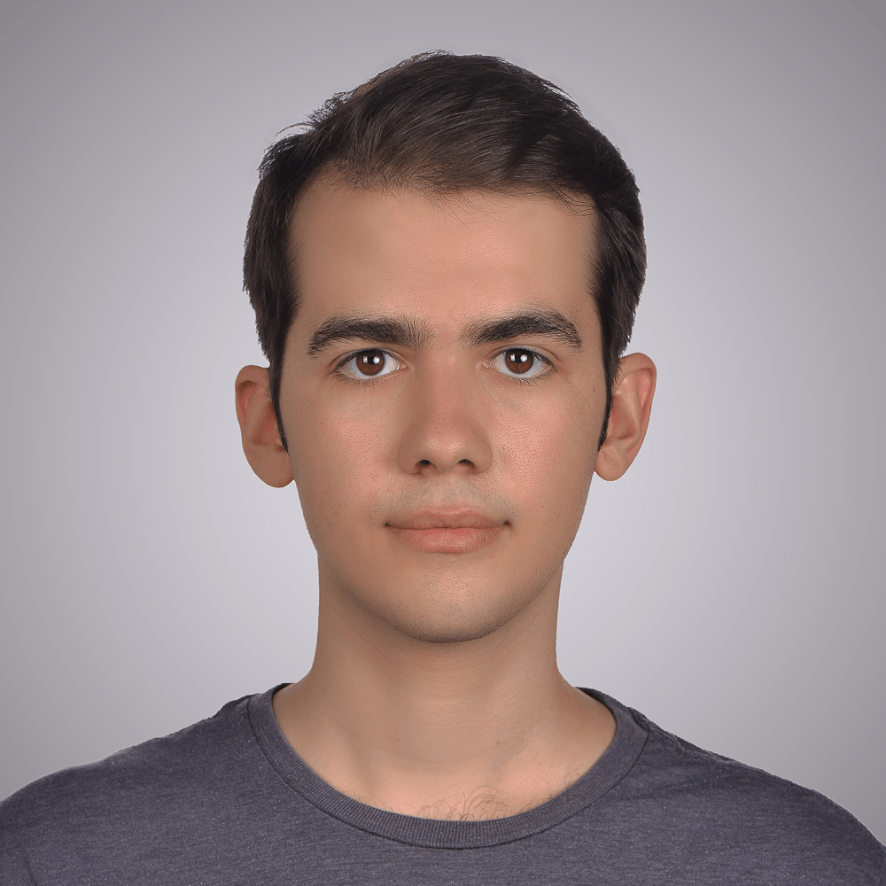

M.Sc. Machine Learning
GPA: 1.9/1.0 (Current)
University of Tübingen
B.Sc. Computer Science (Informatik)
GPA: 1.8/1.0
University of Tübingen
Machine Learning Engineer
M.Sc. Machine Learning student at University of Tübingen. Focused on GenAI, Synthetic Data. I architect scalable AI systems.

GPA: 1.9/1.0 (Current)
University of Tübingen
GPA: 1.8/1.0
University of Tübingen
University of Tübingen
Ulusan, K., & Kiefer, B. (2025). Generating Synthetic Data via Augmentations for Improved Facial Resemblance in DreamBooth and InstantID. CVPR 2025 Workshop "Synthetic Data for Computer Vision".
Real-Time DSP Web App